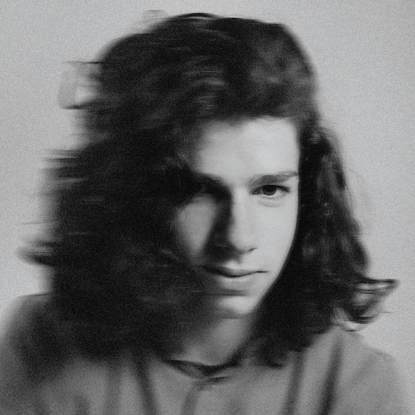
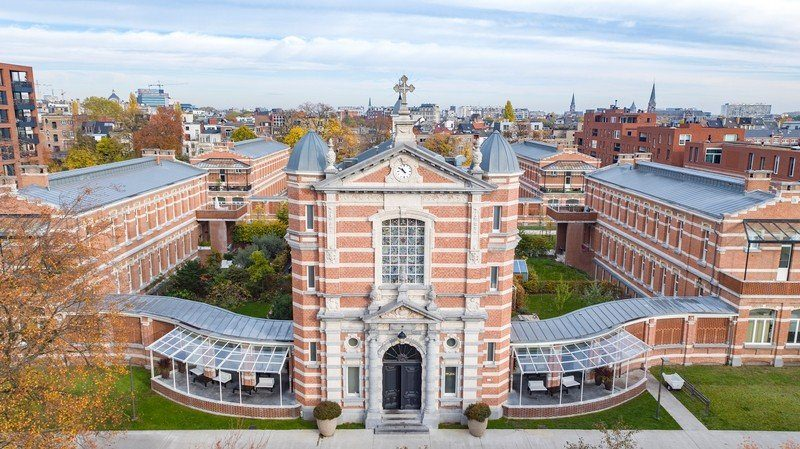
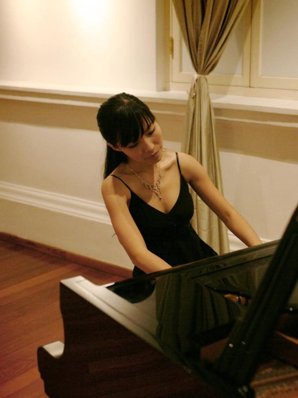

Volgende artiest
KLAAS
Tijd voor mij — solo, stem en gitaar
- DagZaterdag 3 oktober 2026
- UurDeuren 19u · concert 20u
- Prijs€ 25 per persoon
- LocatieGroen Kwartier, Antwerpen
Maandelijkse
Huiskamerconcerten

Eén keer per maand zetten we de deuren van onze huiskamer in het Groen Kwartier open voor een concert van dichtbij. Geen podium, geen afstand — een goeie zestig mensen, een muzikant en de verhalen achter de liedjes.
Voor en na het concert is er een open bar, zodat er tijd is om na te praten. Inschrijven gebeurt per persoon; het exacte adres krijg je in je bevestigingsmail.

Volgende artiest
Tijd voor mij — solo, stem en gitaar

Daarna
Een liggend pianoconcert — neem een matje mee
Voor en na het concert
open bar
Groen Kwartier, Antwerpen. Het exacte adres krijg je in je bevestigingsmail — het is tenslotte iemands huiskamer.
De prijs verschilt per sessie en staat bij elk concert vermeld. Je betaalt ter plaatse — geen online betaling, geen tickets om af te printen.
Per persoon, met naam en e-mailadres. Kom je met twee? Vul het formulier dan twee keer in. Er zijn 60 plaatsen per sessie.